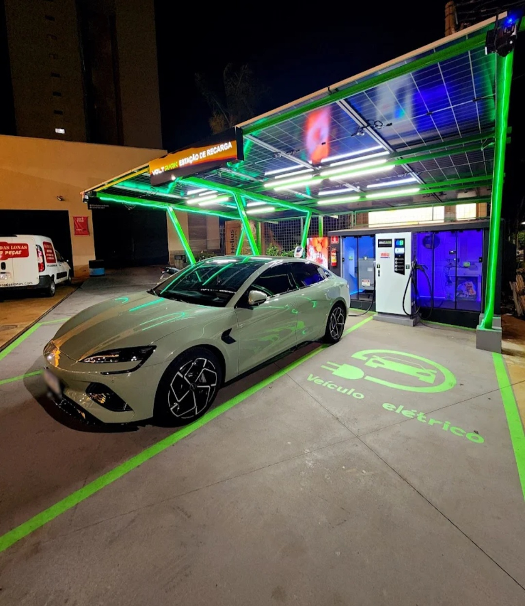
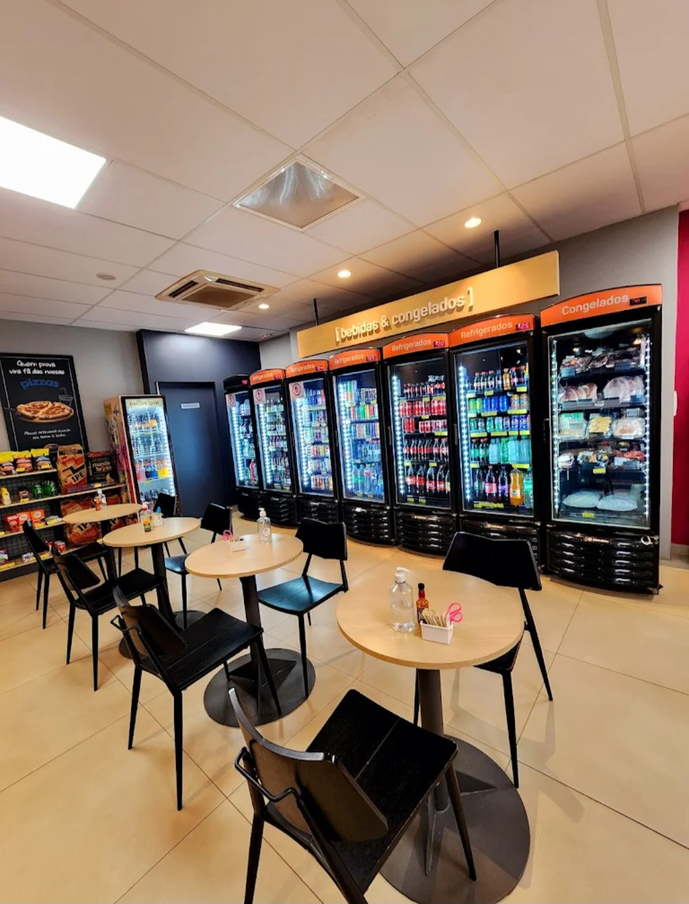
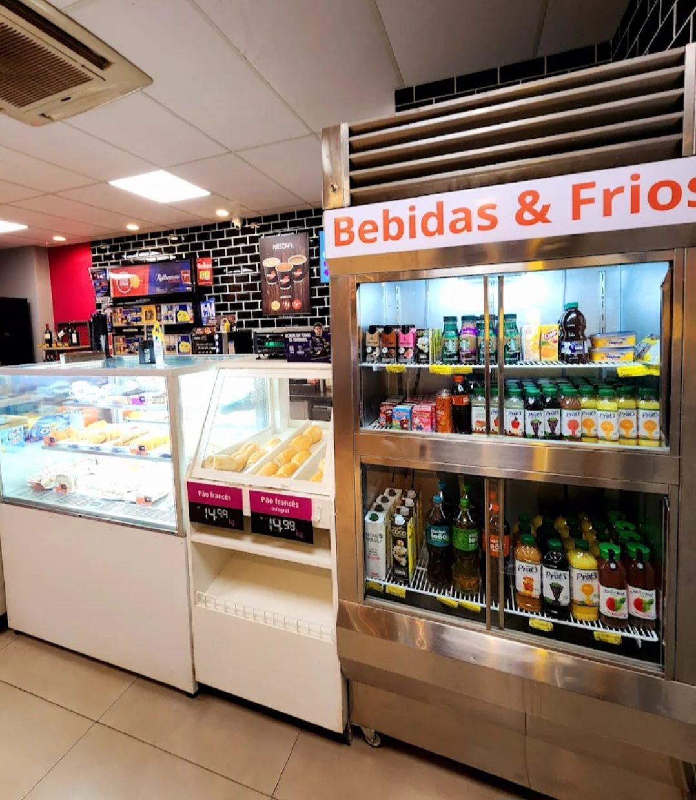
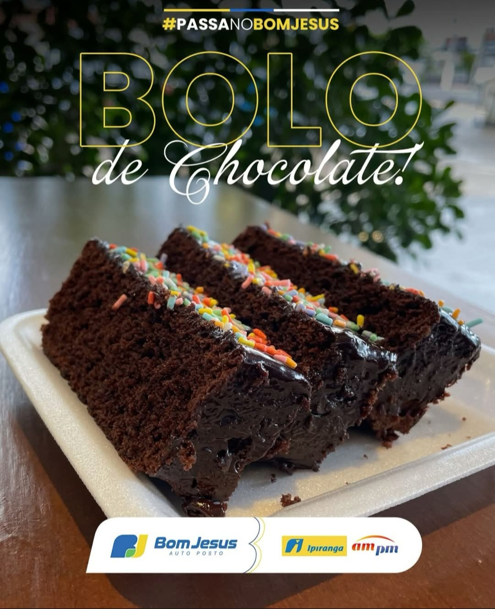

Posto de Combustível • Ourinhos - SP
O BOM JESUS AUTO POSTO é referência em qualidade, atendimento e confiança em Ourinhos/SP. Com uma equipe altamente preparada e estrutura moderna, oferece um serviço completo para motoristas e clientes exigentes.
Localizado em ponto estratégico no centro da cidade, o posto garante praticidade, agilidade e segurança no abastecimento, sempre com foco na excelência no atendimento.
Com combustíveis de procedência e um ambiente organizado, o Bom Jesus Auto Posto se destaca pelo compromisso com a satisfação do cliente e pelo padrão elevado de serviço.
Endereço: Av. Dr. Altino Arantes, 952
Bairro: Centro
Cidade: Ourinhos - SP
WhatsApp: (14) 99607-1777
Falar no WhatsApp✔ Atendimento de alto padrão ✔ Equipe qualificada ✔ Combustíveis de qualidade ✔ Localização central ✔ Estrutura moderna ✔ Atendimento rápido e eficiente



